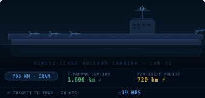
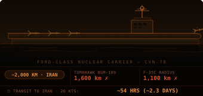

CSIS analysts describe this as "the largest naval force in the region since five carrier battle groups assembled at the outset of Operation Iraqi Freedom in 2003." The fleet's combined Tomahawk-equipped surface ships could unleash 600+ land-attack cruise missiles in a single salvo (OSINT analyst Ian Ellis). However, CSIS notes the force lacks Marines, special operations forces, and logistics for an extended air campaign — it is sized for punitive strikes, not regime change. Ford's deployment was extended a second time; the carrier was previously involved in the Venezuela mission that captured Nicolas Maduro before being redirected to the Middle East. — Sources: CSIS Feb 24, Gulf News, Stars & Stripes, The War Zone
| Nation | Key Assets | Posture | Notable |
|---|---|---|---|
| United Kingdom | Typhoons (Qatar), F-35Bs (Cyprus) | Defensive only | BLOCKED US use of bases |
| Israel (IDF) | IAF full alert, 280K reservists authorized | Offensive-ready | Coordinating with CENTCOM |
| Saudi Arabia | Patriot batteries, RSAF fighters | Elevated | DENIED US use of airspace for strikes |
| Jordan | Muwaffaq Salti Air Base (18×F-15E, 18×F-35A, 12×F-16, 6×EA-18G, 2×MQ-9) | Elevated | Hosts US assets but DENIED airspace for strikes |
| Turkey | NATO 2nd largest military | Diplomatic | Back-channel discussions |
| China | Anti-ship missiles (reported) | Supplying Iran | NEW TODAY |